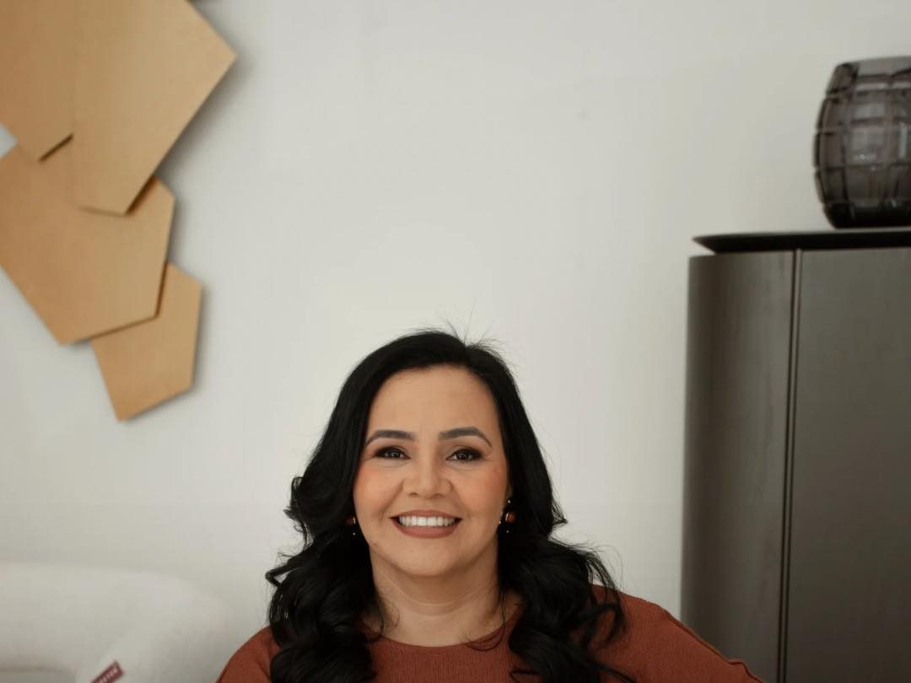
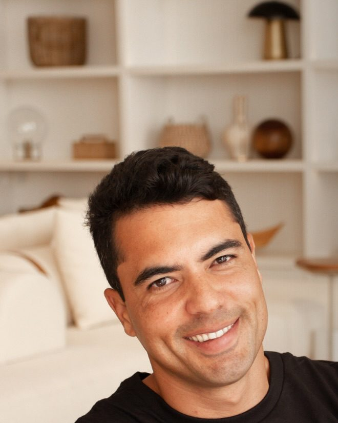
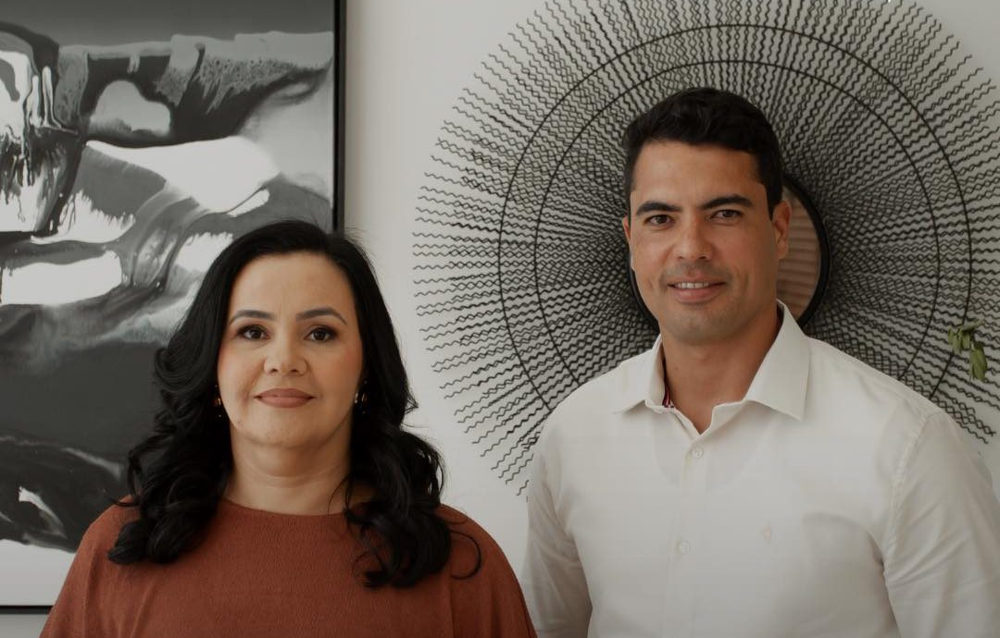

Início · O escritório
Gesica e Danilo: pessoas reais, à frente de cada projeto.
“Somos Gesica e Danilo, e conduzimos o escritório e cada projeto com responsabilidade, sensibilidade e intenção.” Esta página apresenta os dois e a trajetória, com a fonte de cada informação.
Arquiteta e urbanista
Gesica Anastacio

Arquiteta e urbanista formada pela UNIME em 2008, com registro ativo no CAU desde 16/10/2008. Baiana, nascida em Salvador, casada e mãe de um casal.
Conferir no CAU“Acredito em uma arquitetura feita com propósito, técnica e afeto.”
Gesica Anastacio no InstagramDesde 2008
A trajetória
- 2008Arquitetura e Urbanismo pela UNIME
Gesica se forma e, em 16/10/2008, começa o registro no CAU — hoje ativo, A753580.
Fonte: Instagram e CAU - UFBACurso de Design de Interiores
O olhar para dentro de casa: interiores, luz, marcenaria e o que se sente num ambiente.
Fonte: Instagram - Sala de aulaDesenho Técnico e Arquitetônico
Gesica ministrou aulas das duas disciplinas.
Fonte: Instagram - Setor públicoAnalista de projetos
“Atuei por muitos anos como analista de projetos no setor público”, conta ela.
Fonte: Instagram - 2023Nasce a Nobrato Arquitetura
Em 31/08/2023, Gesica e Danilo abrem o escritório, em Salvador.
Fonte: Receita Federal - Hoje5,0 em 37 avaliações
No Google, com resposta do escritório às avaliações.
Fonte: Google
Sócio
Danilo Andrade

Danilo é sócio do escritório e está à frente da gestão e do atendimento, pelo WhatsApp (71) 99121-3756. Os projetos são assinados pela arquiteta Gesica.
Post de apresentação no Instagram“Na Nobrato, acreditamos que bons projetos começam com boas relações.”
Nobrato Arquitetura no InstagramDesde 2023
A Nobrato

- Empresa: Nobrato Arquitetura Ltda., aberta em 31/08/2023, com Gesica e Danilo como sócios.
- Endereço: Av. Luis Viana Filho, 6462 · Wall Street Empresarial · Paralela · Salvador – BA · 41730-101.
- Atendimento: “Atendemos em todo Brasil”, diz a bio do escritório.
- No Google: 5,0 em 37 avaliações.
“Equipe muito qualificada! Liderada por Géssica e Danilo eles acolhem os clientes de uma forma diferenciada.”Hektor B., avaliação no Google · ver no Google
Transparência
Como conferir
- Registro da arquiteta: Ache um arquiteto, do CAU (Gesica Araujo Anastacio, A753580).
- Empresa e data de abertura: cadastro da Nobrato Arquitetura na Receita Federal.
- Formação e trajetória: post de apresentação da Gesica.
- Avaliações, endereço e horário: perfil do escritório no Google.
Dúvidas frequentes
Perguntas comuns
Quem é a arquiteta responsável?
Gesica Anastacio, arquiteta e urbanista, CAU A753580, registrada desde 2008.
Desde quando existe o escritório?
A Nobrato Arquitetura foi aberta em 31/08/2023. Gesica é formada e registrada no CAU desde 2008.
Qual é o papel do Danilo?
Danilo é sócio, à frente da gestão e do atendimento. Os projetos são assinados pela arquiteta Gesica.
Vamos conversar
Todo projeto começa numa conversa.
Conte o que você quer construir ou transformar. O escritório fica na Paralela, em Salvador, e atende em todo o Brasil. WhatsApp (71) 99121-3756.